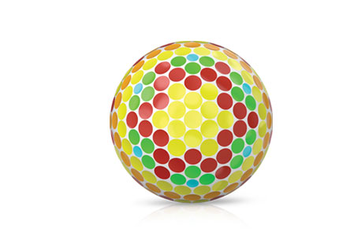

Tour Balls
Engineered for golfers who demand maximum spin, these new Srixon Z-STAR golf balls deliver ultimate maximum greenside spin for unrivalled stopping power. These Z STAR pure white golf balls feature the new FastLayer Core and 4th Generation SpinSkin with SeRM to generate unmatched control around the greens. Available here in Pure White.
TECHNOLOGY

Fastlayer core
The new FastLayer Core is soft in the center and gradually becomes firm around its edge, providing high-speed players exceptional feel and tremendous ball speed for maximum distance.

4th Generation Spin Skin with SeRM
A new urethane coating with flexible molecular bonds that dig deep into wedge and iron grooves, maximizing spin for more control and more stopping power.
338 Speed Dimple Pattern
Offering less drag and more lift, the dimple design boosts overall distance and flies straight, even in the toughest wind conditions.
Z-Star xv Specs
| CONSTRUCTION | 4pc |
| COVER MATERIAL | Urethane |
| COVER THICKNESS | 0.020 in |
| COMPRESSION | 102 |
| DIMPLES | 338 |
SRIXON Z-STAR XV PRICE
50 € / 55 CHF / 500 SEK / 39.99 £